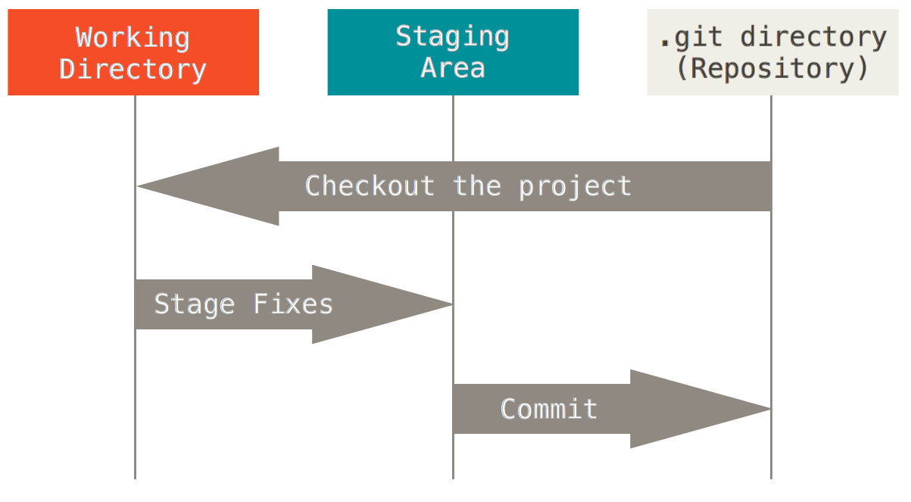

Git pour les nuls
Retour vers le futur pour ton code
Git c'est quoi ?

Gestionnaire de version

Avant
Le dépôt centralisé

Maintenant
VOUS êtes le dépôt!

Okay ... mais en vrai ça marche comment ?
Un système d'instantanés (snapshots)
 Un snapshot est créé à chaque
Un snapshot est créé à chaque git commit
Le pointeur HEAD

Les différents états d'un fichier
Un fichier est forcément dans un de ces états
-
Modifié
-
Le fichier a changé depuis le dernier snapshot
-
-
Indexé
-
La modification est confirmée et sera intégrée dans le prochain snapshot
-
-
Validé
-
Le fichier a été intégré dans le snapshot
-
3 états = 3 Zones
Enchainement

git add .
git commit -m "Message"
RTFM
L'aide de Git (http://git-scm.com/book/fr/v2/ )Travail en équipe

Les Remotes
Une remote est un dépôt distant accessible par tous les membres de l'équipe.
Les Remotes
Ajouter une remote à son dépôt :
git remote add <nom remote> <url remote>
L'url peut être au format http(s) ou SSH
Push
Publier ses modifications :
git push <nom remote> <branche locale>:<branche distante>
Pull
Récupérer les modifications de ses collègues adorés:
git pull [<nom remote>] [<branche distante>]
Hooks
Un hook (littéralement « crochet » ou « hameçon ») permet à l'utilisateur d'un logiciel de personnaliser le fonctionnement de ce dernier, en lui faisant réaliser des actions supplémentaires à des moments déterminés.
– Wikipedia
Hooks
Un hook c'est un endroit dans le processus Git où vous pouvez exécuter votre propre code.
Hooks
Deux sortes de hooks git :
Les Hooks Locaux & Les Hooks Distants
-
Hooks Locaux
-
pre-commit
Executé avant le commit -
post-commit
Executé après le commit
-
pre-commit
-
Hooks Distants
-
pre-receive
Exécuté sur le serveur distant avant la reception d'un push -
update
Comme pre-receive mais lancé une fois pour chaque branche poussée -
post-receive
Exécuté sur le serveur distant après la reception d'un push
-
pre-receive
Hooks
RTFM
Plus d'infos sur githooks.com
Github
Les Forks
Les Forks
Copie d'un dépot
Les forks
Les forks
2 remotes:
- origin : Mon fork
- upstream : Le dépot de base
Les forks
Synchroniser
git fetch upstream
Récupère les modifications du dépot de base, mais ne les applique pas
git checkout master
On s'assure de se mettre sur la branche master
git merge upstream/master
On fusionne les modifs avec les notres
Les forks
Intégrer son code
Les Pull-Requests
Les forks (& Github)
RTFM
Plus d'infos help.github.com/
Les branches
Les branches
/!\ Attention travaux! Déviation de code /!\

Les branches
Créer une branche
git branch <branch name>
Créer une branche et switcher direct dessus
git checkout -b <branch name>
Lister les branches existantes
git branch
Les branches
Comment switcher de branche avec du code en suspend ?Le stash
git stash save
Stocke vos modifs à part et remet la branche actuelle au dernier commit
Les branches
Le stash
git stash pop <stash name>
Stocke vos modifs à part et remet la branche actuelle au dernier commit